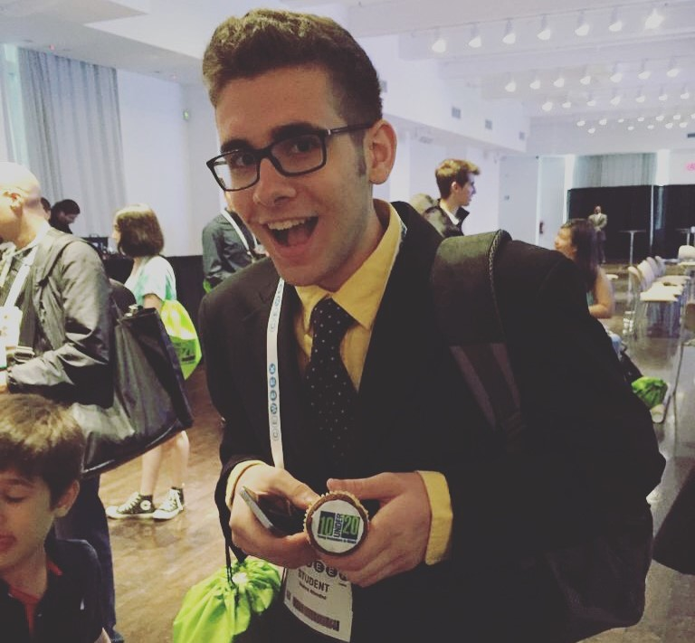

About Me

Hi! I'm Adam. I'm an undergraduate student studying Materials Science, with a wide variety of interdisciplinary interests. From a young age, I've been fascinated with how everything works - whether it was something as simple as a pen or a watch, or the fundamental laws of the universe. As a 15 year old, I co-founded my first company: Kinet-X, a project-based learning program that aimed to bring reasonable STEM education to students as young as 9, and as old as 17. In my role as Director of Programming, I personally developed curriculum for all of our CS classes, and managed a team of student teachers in educating everything from basic web development, to advanced software development. In April of 2017, Kinet-X made it into the Wall Street Journal! I currently attend the California Institute of Technology (Caltech), where I'm involved in student government, work as an Undergraduate Researcher in the Falson Group, and hold a part-time internship at NASA's Jet Propulsion Laboratory on the Psyche mission. I love learning new things, and my interests include STEM education, quantum and topological materials, computer science, and engineering. Feel free to check out some of my writings and projects, or to shoot me an email with questions (or just to chat)!
Education

Undergraduate: California Institute of Technology
BS Materials Science '22
Began attending Caltech in the Fall of 2018. Originally a declared Computer Science major, switched to Materials Science in Spring of 2020. Notable accomplishments include:
- Working at the NASA-owned and Caltech-managed Jet Propulsion Laboratory as a Project System Engineering Intern in Verification and Validation
- Doing condensed matter research in Professor Joseph Falson's group, with a focus on topological materials in thin-film form
- Teaching Assistant for introductory computer science courses, as well as Head TA for CS2: Introduction to Programming Methods from WI21
- Serving as the Interhouse Committee Secretary in the '20-'21 election cycle.

High School: Stuyvesant High School
Regents Diploma with Advanced Designation '18
I attended the prestigious Stuyvesant High School in NYC. It was there that I met my co-founders for Kinet-X, as well as a variety of similarly hardworking and driven individuals. Some of my accomplishments include:
- Captain of the wrestling team my senior year, after placing second in Manhattan as a junior
- Chair of the Board of Elections for two years
- Started Kinet-X, a tech education startup aimed at teaching and inspiring middle school students
- 4.0 GPA across all four years
Hobbies
After balancing my professional and academic responsibilities, I like to take some time to relax and have fun! Some of my biggest hobbies are working out, reading, playing games, and cooking! If you'd like to see some pictures of me doing these activities, feel free to check out my gallery/blog on this website!
Weightlifting
Around my Sophomore year of high school, I took an interest towards exercising and improving my health. I started at first with HIIT training, then moved towards weightlifting. After joining the wrestling team, I began to workout as a bodybuilder, which I continued until halfway through my college freshman year - where I began powerlifting. In November of 2019 I competed in my first powerlifting competition, check it out!
Cooking
I actually started to learn to cook for exercise and health reasons, as I wanted to invest time into eating healthy (but still delicious food). Since then, I've taken the cooking elective at Caltech, and learned to make everything from a killer steak (medium rare please), to garlic shrimp pasta, to my own chicken shawarma. I love cooking for friends and family - almost as much as I love eating - and am always looking for fun new recipes to try!
Playing Games
I enjoy a wide variety of games: both digital and good ol' fashioned board games. Some of my favorites include Super Smash Bros, Assasin's Creed, Settlers of Catan, Cuphead, and the Sly Cooper series. My favorite console has to be the PlayStation 2, although I've owned a PS3, Wii, Wii U and Nintendo Switch over the years. I love socializing, so my favorite way to play games is with other people!